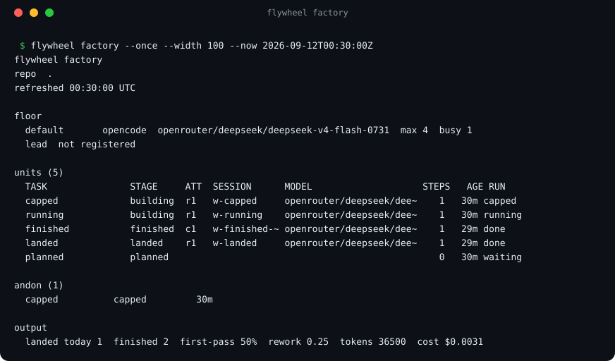
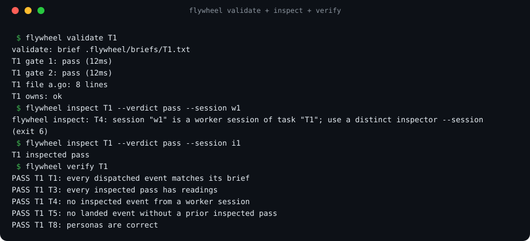
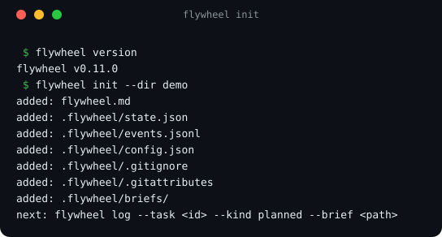

Rent the agents.
Own the factory.
Cheap agents build. Deterministic gauges re-run every claim they make. One expensive lead makes only the calls that need judgement.

A worker's word is never evidence. The tool re-runs the commands itself, on the exact tree that was produced.
Plan
A work order declares which files it owns and which commands must pass. flywheel lint catches a bad one before anyone is dispatched.
Build
A rented agent runs in its own worktree. Every tool call it makes is streamed into an append-only run log.
Measure
The lead re-runs each gate and checks the owns boundary. A reading is bound to the tree hash it was taken on.
Land
The poka-yoke rules refuse anything unproven. Only then does the work land, against a recorded commit.
What the gauges actually do
Every gate is re-run by the lead and recorded, with its output kept as evidence. The inspector then refuses a pass that has no reading behind it.

Four things a checklist cannot do
Gates you cannot talk your way past
A rule refusal exits 6. A pass verdict with no matching reading on the same tree hash is refused outright, so "it works on my machine" has nowhere to live.
A gate for the real path
live-gate: runs only in the lead's verification pass, against the real provider. A unit that declares one cannot be accepted on mocked gates alone. It exists because a feature once shipped across 42 units with every gate green, and failed on the first real call.
An append-only ledger
Every plan, dispatch, reading, verdict and landing is an event. State is derived from the log and never edited. flywheel verify checks the chain; flywheel trace replays everything one session did.
Any vendor, swapped at will
Adapters for OpenCode, Claude Code and an offline simulator. flywheel doctor probes every configured model and says which are actually reachable, before you dispatch anything.
The claim underneath
What is deterministic, and what is not
flywheel does not try to make the model reproducible. It makes non-determinism irrelevant to the accept or reject decision. Everything the agent does is unpredictable. Everything that decides whether the work may land is not.
| Mechanism | Why it is deterministic |
|---|---|
| Tree hash | A git tree SHA computed with a throwaway index. Same tree, same hash, always. |
| Gates | Shell commands with real exit codes, re-run by the lead, never the worker's claim. |
owns: check | A set comparison of the paths actually changed against the declared list. |
| Brief hash | SHA-256 stamped at dispatch, so a work order edited afterwards is detectable. |
| Event log | Append-only. Derived state is a fold over it and is never hand-edited. |
| Rules T1 to T10 | Pure functions over that log. Same log, same verdict. |
Not "the tests passed somewhere". The reading is bound to the exact tree that landed. Change one byte and it no longer applies.
A changed path outside the unit's declared list is reported, and attributed to whichever in-flight unit does own it.
A session cannot pass work it wrote, so the two independent checks stay two.
Append-only, derived state, and a verify pass that re-checks the whole chain.
What it does not guarantee: it guarantees the gates ran, not that they were the right gates. That is where every real failure has come from, and it is why live-gate: and structural document readings exist. flywheel moves the trust boundary from "trust the agent" to "trust a small, auditable set of checks, plus the quality of the gates you wrote".
Install
# short Linux x86_64 example: verify the checksum, then unzip and install
gh release download --repo suzworx/flywheel \
--pattern '*checksums*' --pattern '*linux-amd64*'
sha256sum -c --ignore-missing checksums.txt
unzip -o 'flywheel-*-linux-amd64.zip'
sudo install -m 0755 flywheel-*-linux-amd64 /usr/local/bin/flywheel
flywheel init # scaffold the factory
flywheel doctor # is a model reachable?
flywheel upgrade # later, checksum-verified
Go 1.27, standard library only. One static binary with no dependencies, for Linux, macOS on Intel and Apple silicon, and Windows.
The commands you will use
| Command | What it does |
|---|---|
flywheel init | Scaffold the factory state files into a repo. |
flywheel lint | Catch a missing owns, a missing gate, or a live-gate that only repeats a mocked one. |
flywheel run | Dispatch a worker and record everything it does. |
flywheel validate | Re-run a task's gates and check its owns boundary. --live adds the real-path gates. |
flywheel inspect | Apply the poka-yoke rules and record a verdict. |
flywheel factory | The floor at a glance, with an andon for units that stalled or went quiet. |
flywheel doctor | Probe every configured model and classify its availability. |
flywheel feedback | Curate signals into learnings, and export them without leaking paths or tokens. |
It builds itself.
Work orders are written, rented workers build, the CLI measures, and the lead lands only what the gauges will vouch for. Pointing the factory at itself is also how several of its own defects were found, including a worker path where a failed run was being recorded as a clean success.